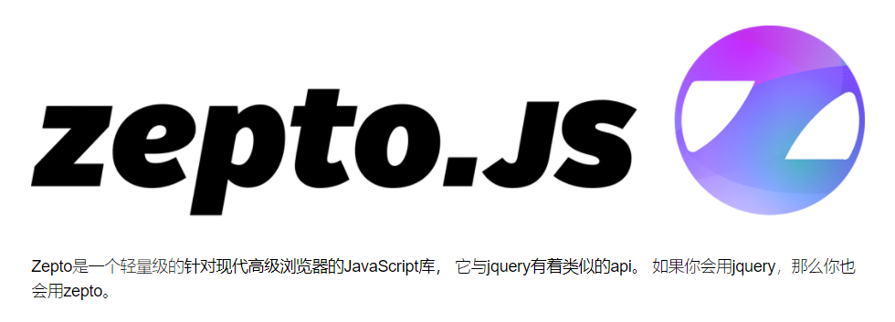
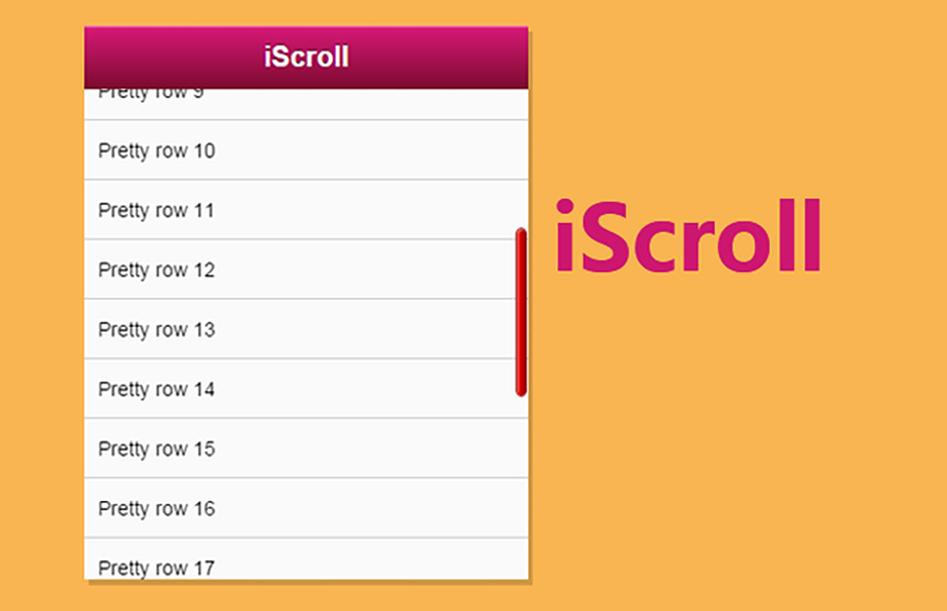
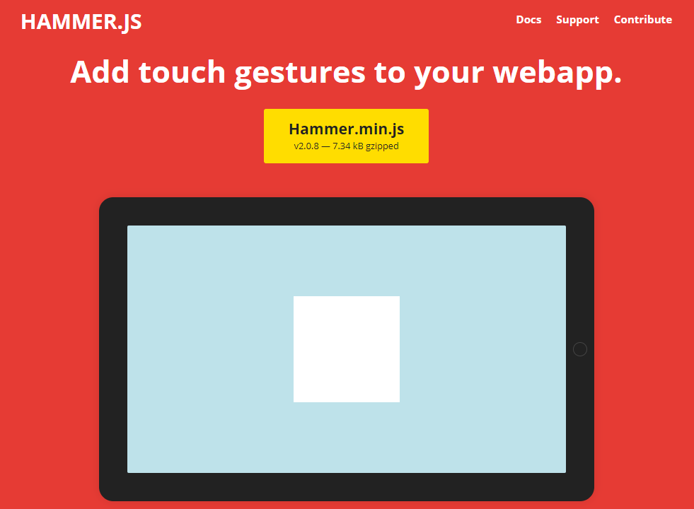
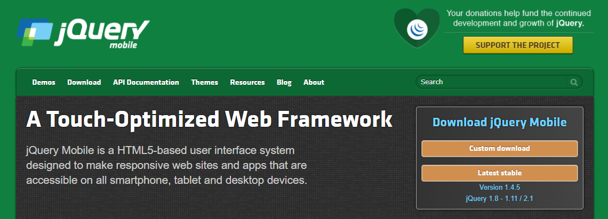
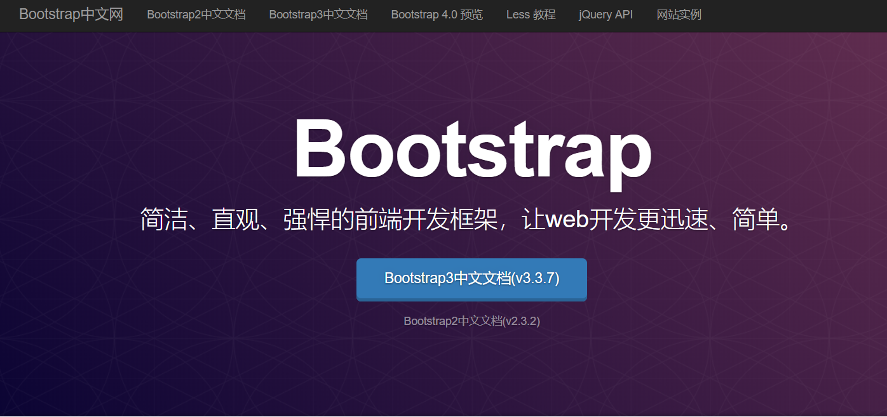
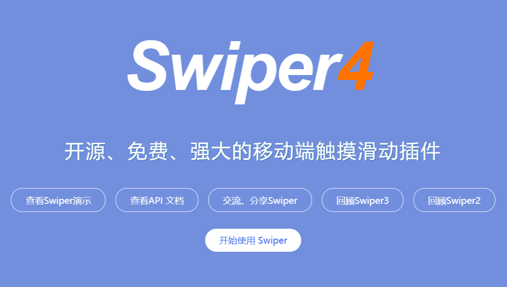

<!DOCTYPE html><html><head><meta charset="utf-8"><title>前端开发者常用的插件汇总，看看你用过几个？ | 技术学派</title><meta name="viewport" content="width=device-width,initial-scale=1,maximum-scale=1"><meta name="keywords" content="IT培训, Python, 大数据, 人工智能, Web前端, PHP, web前端"><meta name="description" content="Touch.jsTouch.js是移动设备上的手势识别与事件库, 由百度云Clouda团队维护，也是在百度内部广泛使用的开发工具.1网站地址：http://www.bootcdn.cn/touchjs/Zepto.jsZepto的设计目的是提供 jQuery 的类似的API，但并不是100%覆盖 jQuery 。Zepto设计的目的是有一个5-10k的通用库、下载并快速执行、有一个熟悉通用的API"><meta name="keywords" content="web前端"><meta property="og:type" content="article"><meta property="og:title" content="前端开发者常用的插件汇总，看看你用过几个？"><meta property="og:url" content="http://www.JiShuXuePai.com/blog/插件资源库/插件资源库/前端开发者常用的插件汇总，看看你用过几个？/index.html"><meta property="og:site_name" content="技术学派"><meta property="og:description" content="Touch.jsTouch.js是移动设备上的手势识别与事件库, 由百度云Clouda团队维护，也是在百度内部广泛使用的开发工具.1网站地址：http://www.bootcdn.cn/touchjs/Zepto.jsZepto的设计目的是提供 jQuery 的类似的API，但并不是100%覆盖 jQuery 。Zepto设计的目的是有一个5-10k的通用库、下载并快速执行、有一个熟悉通用的API"><meta property="og:locale" content="zh-CN"><meta property="og:image" content="http://www.jishuxuepai.com/blog/插件资源库/插件资源库/前端开发者常用的插件汇总，看看你用过几个？/01.png"><meta property="og:updated_time" content="2018-05-29T03:38:21.000Z"><meta name="twitter:card" content="summary"><meta name="twitter:title" content="前端开发者常用的插件汇总，看看你用过几个？"><meta name="twitter:description" content="Touch.jsTouch.js是移动设备上的手势识别与事件库, 由百度云Clouda团队维护，也是在百度内部广泛使用的开发工具.1网站地址：http://www.bootcdn.cn/touchjs/Zepto.jsZepto的设计目的是提供 jQuery 的类似的API，但并不是100%覆盖 jQuery 。Zepto设计的目的是有一个5-10k的通用库、下载并快速执行、有一个熟悉通用的API"><meta name="twitter:image" content="http://www.jishuxuepai.com/blog/插件资源库/插件资源库/前端开发者常用的插件汇总，看看你用过几个？/01.png"><link rel="stylesheet" href="/libs/bootstrap/bootstrap-grid.css"><link rel="stylesheet" href="/libs/font-awesome/css/font-awesome.min.css"><link rel="stylesheet" href="/libs/titillium-web/styles.css"><link rel="stylesheet" href="/libs/source-code-pro/styles.css"><link rel="stylesheet" href="/css/style.css"><script src="/libs/jquery/jquery.min.js"></script><link rel="stylesheet" href="/libs/lightgallery/css/lightgallery.min.css"><link rel="stylesheet" href="/libs/justified-gallery/justifiedGallery.min.css"><script>var _hmt=_hmt||[];!function(){var e=document.createElement("script");e.src="//hm.baidu.com/hm.js?4c1bd812de3c30edbaa2b803c66f0a04";var t=document.getElementsByTagName("script")[0];t.parentNode.insertBefore(e,t)}()</script></head></html><body><div id="wrap"><header id="header"><div id="header-outer" class="outer"><div class="container"><div class="container-inner"><div id="header-title"><h1 class="logo-wrap"><a href="/" class="logo"></a></h1></div><div id="header-inner" class="nav-container"><a id="main-nav-toggle" class="nav-icon fa fa-bars">菜单</a><div class="nav-container-inner"><ul id="main-nav"><li class="main-nav-list-item"><a class="main-nav-list-link" href="/">主页</a></li><li class="main-nav-list-item"><a class="main-nav-list-link" href="/edu/index.html">学编程</a></li><li class="main-nav-list-item"><a class="main-nav-list-link" href="/blog/">博客</a></li><li class="main-nav-list-item"><a class="main-nav-list-link" href="/tips.html">学习建议</a></li><li class="main-nav-list-item"><a class="main-nav-list-link" href="/about.html">关于</a></li></ul><nav id="sub-nav"><div id="search-form-wrap"><form class="search-form"><input type="text" class="ins-search-input search-form-input" placeholder="搜索"> <button type="submit" class="search-form-submit"></button></form><div class="ins-search"><div class="ins-search-mask"></div><div class="ins-search-container"><div class="ins-input-wrapper"><input type="text" class="ins-search-input" placeholder="想要查找什么..."> <span class="ins-close ins-selectable"><i class="fa fa-times-circle"></i></span></div><div class="ins-section-wrapper"><div class="ins-section-container"></div></div></div></div><script>window.INSIGHT_CONFIG={TRANSLATION:{POSTS:"文章",PAGES:"页面",CATEGORIES:"分类",TAGS:"标签",UNTITLED:"(未命名)"},ROOT_URL:"/",CONTENT_URL:"/content.json"}</script><script src="/js/insight.js"></script></div></nav></div></div></div></div></div></header><div class="container"><div class="main-body container-inner"><div class="main-body-inner"><section id="main"><div class="main-body-header"><h1 class="header"><a class="page-title-link" href="/categories/插件资源库/">插件资源库</a><div class="author">张桐硕</div></h1></div><div class="main-body-content"><article id="post-插件资源库/前端开发者常用的插件汇总，看看你用过几个？" class="article article-single article-type-post" itemscope itemprop="blogPost"><div class="article-inner"><header class="article-header"><h1 class="article-title" itemprop="name">前端开发者常用的插件汇总，看看你用过几个？</h1></header><div class="article-meta"><div class="article-date"><a href="/blog/插件资源库/插件资源库/前端开发者常用的插件汇总，看看你用过几个？/" class="article-date"><time datetime="2018-05-29T03:20:00.367Z" itemprop="datePublished">2018-05-29</time></a></div><div class="article-tag"><i class="fa fa-tag"></i> <a class="tag-link" href="/tags/web前端/">web前端</a></div></div><div class="article-entry" itemprop="articleBody"><h3 id="Touch-js"><a href="#Touch-js" class="headerlink" title="Touch.js"></a>Touch.js</h3><blockquote><p>Touch.js是移动设备上的手势识别与事件库, 由百度云Clouda团队维护，也是在百度内部广泛使用的开发工具.</p></blockquote><figure class="highlight plain"><table><tr><td class="gutter"><pre><span class="line">1</span><br></pre></td><td class="code"><pre><span class="line">网站地址：http://www.bootcdn.cn/touchjs/</span><br></pre></td></tr></table></figure><h3 id="Zepto-js"><a href="#Zepto-js" class="headerlink" title="Zepto.js"></a>Zepto.js</h3><blockquote><p>Zepto的设计目的是提供 jQuery 的类似的API，但并不是100%覆盖 jQuery 。Zepto设计的目的是有一个5-10k的通用库、下载并快速执行、有一个熟悉通用的API，所以你能把你主要的精力放到应用开发上。</p></blockquote><p></p><figure class="highlight plain"><table><tr><td class="gutter"><pre><span class="line">1</span><br></pre></td><td class="code"><pre><span class="line">网站地址：http://www.zeptojs.cn/</span><br></pre></td></tr></table></figure><h3 id="iScroll-js"><a href="#iScroll-js" class="headerlink" title="iScroll.js"></a>iScroll.js</h3><blockquote><p>iScroll是一个高性能，资源占用少，无依赖，多平台的javascript滚动插件。它可以在桌面，移动设备和智能电视平台上工作。它一直在大力优化性能和文件大小以便在新旧设备上提供最顺畅的体验。</p></blockquote><p></p><figure class="highlight plain"><table><tr><td class="gutter"><pre><span class="line">1</span><br></pre></td><td class="code"><pre><span class="line">网站地址：https://www.cnblogs.com/RuMengkai/p/6593709.html</span><br></pre></td></tr></table></figure><h3 id="Hammer-js"><a href="#Hammer-js" class="headerlink" title="Hammer.js"></a>Hammer.js</h3><blockquote><p>Hammer.js是一个开源的,轻量级的javascript库,它可以在不需要依赖其他东西的情况下识别触摸,鼠标事件。</p></blockquote><p></p><figure class="highlight plain"><table><tr><td class="gutter"><pre><span class="line">1</span><br></pre></td><td class="code"><pre><span class="line">网站地址：http://hammerjs.github.io/</span><br></pre></td></tr></table></figure><h3 id="jQuery-Mobile"><a href="#jQuery-Mobile" class="headerlink" title="jQuery Mobile"></a>jQuery Mobile</h3><blockquote><p>jQuery Mobile是一个基于html5的用户界面系统，旨在使所有智能手机、平板电脑和桌面设备都能访问到响应性的网站和应用程序。</p></blockquote><p></p><figure class="highlight plain"><table><tr><td class="gutter"><pre><span class="line">1</span><br></pre></td><td class="code"><pre><span class="line">网站地址：http://jquerymobile.com/</span><br></pre></td></tr></table></figure><h3 id="Bootstrap"><a href="#Bootstrap" class="headerlink" title="Bootstrap"></a>Bootstrap</h3><blockquote><p>Bootstrap，来自 Twitter，是目前很受欢迎的前端框架。Bootstrap 是基于 HTML、CSS、JavaScript 的，它简洁灵活，使得 Web 开发更加快捷。</p></blockquote><p></p><figure class="highlight plain"><table><tr><td class="gutter"><pre><span class="line">1</span><br></pre></td><td class="code"><pre><span class="line">网站地址：http://www.bootcss.com/</span><br></pre></td></tr></table></figure><h3 id="Swiper"><a href="#Swiper" class="headerlink" title="Swiper"></a>Swiper</h3><blockquote><p>Swiper是纯javascript打造的滑动特效插件，面向手机、平板电脑等移动终端。能实现触屏焦点图、触屏Tab切换、触屏多图切换等常用效果。</p></blockquote><p></p><figure class="highlight plain"><table><tr><td class="gutter"><pre><span class="line">1</span><br></pre></td><td class="code"><pre><span class="line">网站地址：http://www.swiper.com.cn/</span><br></pre></td></tr></table></figure><p>在工作中使用插件可以大大提升我们的工作效率。</p><p><strong>建议：但是技术学派在这里提醒大家也不要太依赖插件哦，如果时间允许的话，不要总是直接去用别人写好的插件和库，而是看他们是怎么写的，模仿着他们的写法，多思考人家的思路，再找到自己的风格。</strong></p></div><footer class="article-footer"><a data-url="http://www.JiShuXuePai.com/blog/插件资源库/插件资源库/前端开发者常用的插件汇总，看看你用过几个？/" data-id="cjhr4tw3i003bzifybfay2kkw" class="article-share-link"><i class="fa fa-share"></i>分享到</a><script>!function(n){n("body").on("click",function(){n(".article-share-box.on").removeClass("on")}).on("click",".article-share-link",function(t){t.stopPropagation();var e,a=n(this),o=a.attr("data-url"),r=encodeURIComponent(o),i="article-share-box-"+a.attr("data-id"),s=a.offset();if(n("#"+i).length){if((e=n("#"+i)).hasClass("on"))return void e.removeClass("on")}else{var l=['<div id="'+i+'" class="article-share-box">','<input class="article-share-input" value="'+o+'">','<div class="article-share-links">','<a href="https://twitter.com/intent/tweet?url='+r+'" class="article-share-twitter" target="_blank" title="Twitter"></a>','<a href="https://www.facebook.com/sharer.php?u='+r+'" class="article-share-facebook" target="_blank" title="Facebook"></a>','<a href="http://pinterest.com/pin/create/button/?url='+r+'" class="article-share-pinterest" target="_blank" title="Pinterest"></a>','<a href="https://plus.google.com/share?url='+r+'" class="article-share-google" target="_blank" title="Google+"></a>',"</div>","</div>"].join("");e=n(l),n("body").append(e)}n(".article-share-box.on").hide(),e.css({top:s.top+25,left:s.left}).addClass("on")}).on("click",".article-share-box",function(t){t.stopPropagation()}).on("click",".article-share-box-input",function(){n(this).select()}).on("click",".article-share-box-link",function(t){t.preventDefault(),t.stopPropagation(),window.open(this.href,"article-share-box-window-"+Date.now(),"width=500,height=450")})}(jQuery)</script></footer></div></article><section id="comments"><div id="gitalk_frame"></div></section></div></section><aside id="sidebar"><a class="sidebar-toggle" title="Expand Sidebar"><i class="toggle icon"></i></a><div class="sidebar-top"><p>关注我 :</p><ul class="social-links"><li><a class="social-tooltip" title="火星时代" href="http://edu.hxsd.com/edunew/topics/webfull/index.html" target="_blank"><i class="icon fa fa-dribbble"></i></a></li><li><a class="social-tooltip" title="weibo" href="#" target="_blank"><i class="icon fa fa-weibo"></i></a></li><li><a class="social-tooltip" title="rss" href="/atom.xml" target="_blank"><i class="icon fa fa-rss"></i></a></li></ul></div><nav id="article-nav"><a href="/blog/学习答疑/学习答疑/Python必会的12道面试题，附详细讲解/" id="article-nav-newer" class="article-nav-link-wrap"><strong class="article-nav-caption">下一篇</strong><p class="article-nav-title">Python必会的12道面试题，附详细讲解</p><i class="icon fa fa-chevron-right" id="icon-chevron-right"></i> </a><a href="/blog/学习答疑/学习答疑/C、C++、Java、JavaScript、PHP、Python分别用来开发什么？/" id="article-nav-older" class="article-nav-link-wrap"><strong class="article-nav-caption">上一篇</strong><p class="article-nav-title">C、C++、Java、JavaScript、PHP、Python分别用来开发什么？</p><i class="icon fa fa-chevron-left" id="icon-chevron-left"></i></a></nav><div class="widgets-container"><div class="widget-wrap widget-list"><h3 class="widget-title">分类</h3><div class="widget"><ul class="category-list"><li class="category-list-item"><a class="category-list-link" href="/categories/animate/">animate</a><span class="category-list-count">17</span></li><li class="category-list-item"><a class="category-list-link" href="/categories/git/">git</a><span class="category-list-count">1</span></li><li class="category-list-item"><a class="category-list-link" href="/categories/html/">html</a><span class="category-list-count">2</span></li><li class="category-list-item"><a class="category-list-link" href="/categories/js/">js</a><span class="category-list-count">5</span></li><li class="category-list-item"><a class="category-list-link" href="/categories/php/">php</a><span class="category-list-count">3</span></li><li class="category-list-item"><a class="category-list-link" href="/categories/vue/">vue</a><span class="category-list-count">1</span></li><li class="category-list-item"><a class="category-list-link" href="/categories/学习答疑/">学习答疑</a><span class="category-list-count">24</span></li><li class="category-list-item"><a class="category-list-link" href="/categories/插件资源库/">插件资源库</a><span class="category-list-count">4</span></li></ul></div></div><link rel="stylesheet" href="/css/tech/toc.css"><div class="widget-wrap widget-list widget-toc"><h3 class="widget-title">目录</h3><div class="widget"><div class="toc"></div><link rel="stylesheet" href="https://cdnjs.cloudflare.com/ajax/libs/tocbot/3.0.5/tocbot.css"><script src="https://cdnjs.cloudflare.com/ajax/libs/tocbot/3.0.5/tocbot.min.js"></script><script>$(function(){$(".main-body-content").find("h1,h2,h3").each(function(t){$(this).attr("id")||$(this).attr("id","list"+t)}),tocbot.init({tocSelector:".toc",contentSelector:".main-body-content",headingSelector:"h1, h2, h3",collapseDepth:2,positionFixedSelector:".widget-toc",fixedSidebarOffset:595,includeHtml:!1})})</script></div></div><div class="widget-wrap widget-list"><h3 class="widget-title">标签</h3><div class="widget"><ul class="tag-list"><li class="tag-list-item"><a class="tag-list-link" href="/tags/C/">C</a><span class="tag-list-count">1</span></li><li class="tag-list-item"><a class="tag-list-link" href="/tags/python/">python</a><span class="tag-list-count">11</span></li><li class="tag-list-item"><a class="tag-list-link" href="/tags/web前端/">web前端</a><span class="tag-list-count">2</span></li></ul></div></div><div class="widget-wrap widget-float"><h3 class="widget-title">标签云</h3><div class="widget tagcloud"><a href="/tags/C/" style="font-size:10px">C</a> <a href="/tags/python/" style="font-size:20px">python</a> <a href="/tags/web前端/" style="font-size:15px">web前端</a></div></div><div class="widget-wrap widget-list"><h3 class="widget-title">链接</h3><div class="widget"><ul><li><a href="http://edu.hxsd.com/edunew/topics/webfull/index.html">火星时代</a></li></ul></div></div></div></aside><script>$(function(){$(window).scroll(function(){240<=$(document).scrollTop()?($("#sidebar .sidebar-toggle").addClass("fix"),"block"==$("#sidebar .sidebar-toggle").css("display")&&$(".is-position-fixed").css("top","35px")):$("#sidebar .sidebar-toggle").removeClass("fix")})})</script></div></div></div><footer id="footer"><div class="top"><div class="inner"><div class="list"><div class="left clearfix"><dl><dt>关于我们</dt><dd><a href="/about.html" target="_blank">公司简介</a></dd><dd><a href="edu/index.html" target="_blank">联系我们</a></dd></dl><dl><dt>校区攻略</dt><dd><a href="edu/index.html" target="_blank">校区环境</a></dd><dd><a href="edu/index.html" target="_blank">住宿攻略</a></dd><dd><a href="edu/index.html" target="_blank">来校路线</a></dd></dl><dl><dt>课程培训</dt><dd><a href="edu/python.html" target="_blank">Python</a></dd><dd><a href="edu/python.html" target="_blank">Web前端</a></dd><dd><a href="edu/python.html" target="_blank">PHP</a></dd><dd><a href="edu/python.html" target="_blank">人工智能</a></dd><dd><a href="edu/python.html" target="_blank">大数据</a></dd></dl><dl><dt>常见问答</dt><dd><a href="edu/index.html" target="_blank">学费学时</a></dd><dd><a href="edu/index.html" target="_blank">学习方法</a></dd></dl></div></div><div class="tel"><tel>176-0025-8815</tel><span>北京市海淀区杏石口路81号火星时代大厦</span></div><div class="weixin"><div class="w1"> <span>头条号</span></div><div class="w1"> <span>官方微信</span></div></div></div></div><div class="bot">Copyright 2018 技术学派 京ICP备15015508号-3</div></footer><link rel="stylesheet" href="https://unpkg.com/gitalk/dist/gitalk.css"><script src="https://unpkg.com/gitalk/dist/gitalk.min.js"></script><script>var gitalk=new Gitalk({clientID:"2fbbb9980b49019d99a7",clientSecret:"152dd10e83ef6595761ea2185304f9ac8263573f",repo:"jsxp",owner:"li-kang",admin:["li-kang"]});gitalk.render("gitalk_frame")</script><script src="/libs/lightgallery/js/lightgallery.min.js"></script><script src="/libs/lightgallery/js/lg-thumbnail.min.js"></script><script src="/libs/lightgallery/js/lg-pager.min.js"></script><script src="/libs/lightgallery/js/lg-autoplay.min.js"></script><script src="/libs/lightgallery/js/lg-fullscreen.min.js"></script><script src="/libs/lightgallery/js/lg-zoom.min.js"></script><script src="/libs/lightgallery/js/lg-hash.min.js"></script><script src="/libs/lightgallery/js/lg-share.min.js"></script><script src="/libs/lightgallery/js/lg-video.min.js"></script><script src="/libs/justified-gallery/jquery.justifiedGallery.min.js"></script><script src="/js/main.js"></script></div></body>